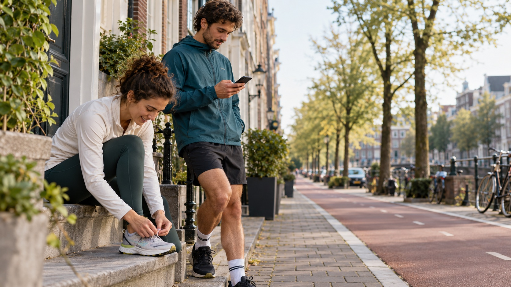

Outdoor fitness apps
Let people compare the conditions around a workout they have already scheduled.
For platform teams
GOTime is a planning layer designed for outdoor activity apps. It places heat and air-quality information beside a planned activity, so people can compare another time or place without leaving their usual planning flow.
The planning layer
A run has been scheduled. A route has been saved. A group session is being organised. GOTime compares heat and air quality for that plan, instead of adding another dashboard of readings to check.

01The user has a planA run, walk, ride or group session.
02GOTime adds contextHeat and air-quality estimates for the planned time and place.
03The user compares optionsThe conditions remain visible while they decide.
Where it fits
The first useful placement depends on where your users make an outdoor plan.
Let people compare the conditions around a workout they have already scheduled.
Put environmental context beside a selected place or route at the resolution the available data supports.
Bring a short planning comparison into the phone experience that supports activity on the wrist.
A focused pilot
We begin with one question, such as whether another time suits a planned run. Together, we can decide where the comparison belongs in your app and measure both the user response and a partner outcome, such as repeat use of its planning feature.
See the GOTime comparisonTalk to us
Pilots start small: one planning decision, one user group, one partner measure.